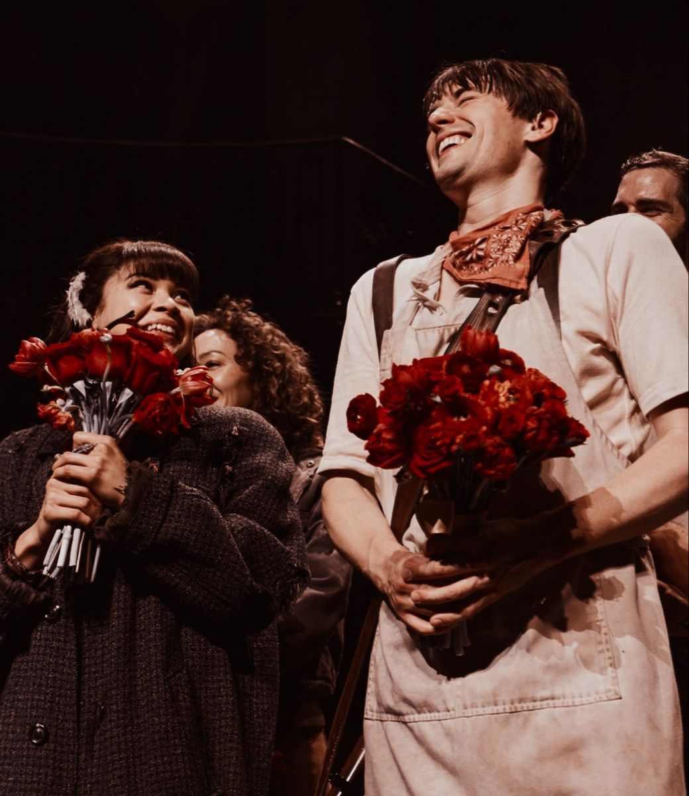
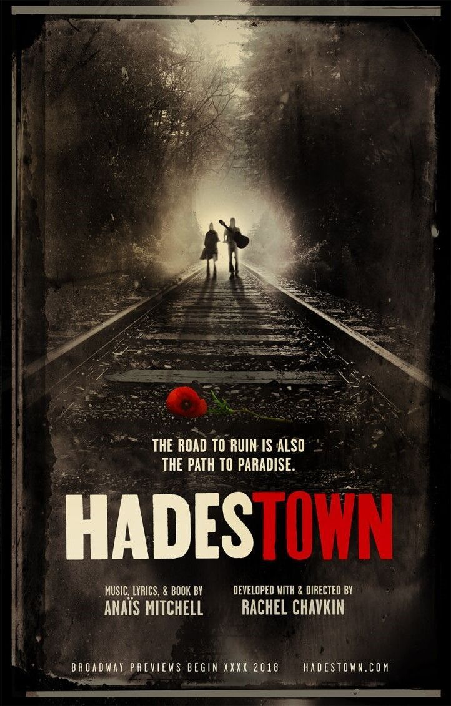

Musical, Drama, Romance
2019 (Broadway)
Approximately 2 hours 30 minutes
Anaïs Mitchell
Hadestown retells the Greek myths of Orpheus and Eurydice alongside Hades and Persephone. Set in a haunting, jazz-inspired underworld, the musical explores love, hope, sacrifice, and the power of storytelling.